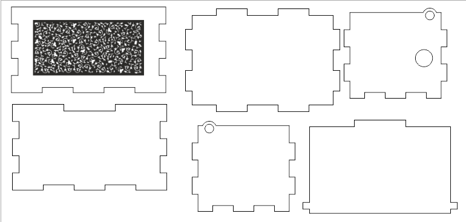

Laser cutting is a fabrication process that uses a thin, focused, laser beam to cut and etch materials into custom designs, patterns, and shapes as specified by a designer. This non-contact, thermal-based fabrication process is ideal for several materials, including wood, glass, paper, metal, plastic, and gemstone. For our digital fabrication elective we would be using Plywood.
In order to laser cut we first import our files as .dxf to LibreCAD and colloated into one single file. The LibreCAD file is then being brought in to CorelDraw where we would do the final touch up before laser cut such as adjusting the settings of the cut to recommended settings and also designs that would be engraved onto the music box.

collated file with design included on the back of the music box